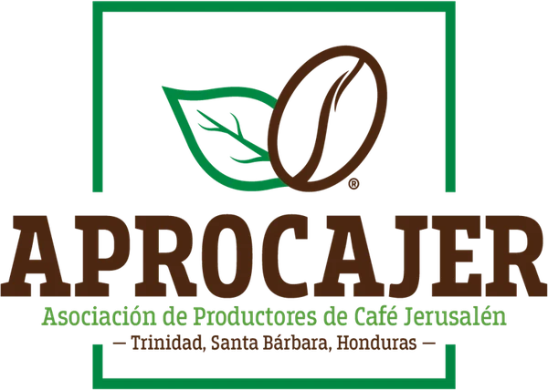
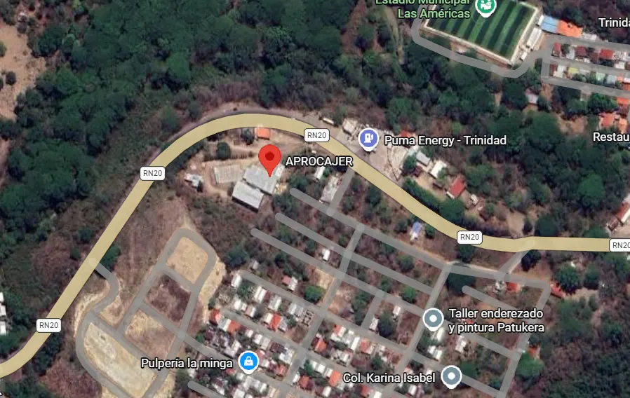

Sobre nosotros
Quiénes somos
APROCAJER es una organización santabarbarense, constituida en 2019 en Trinidad, Santa Bárbara, al noroccidente de Honduras. Producimos, comercializamos y exportamos cafés de especialidad certificados y convencionales.
Conectamos a importadores y tostadores con cafés hondureños de calidad, autenticidad y valor de origen. Más de 500 productores combinan experiencia y pasión por el café.
Estamos registrados y autorizados por el Instituto Hondureño del Café (IHCAFE).
Nuestra historia
- Inicios del siglo XX. Liberato Fajardo y Vicenta Sabillón, bisabuelos de nuestro gerente general, el Ing. José Francisco Cuellar Fajardo, producen café en pequeñas parcelas.
- 1949. José Salomón Fajardo Sabillón y Adriana Bueso Paredes fundan "Tienda y bodega La Confianza", con relaciones comerciales con H de Sola y Beneficio Chimizales.
- 2010. Nace Inversiones Jerusalén como centro de acopio: 2,900 quintales de café pergamino seco en su primer año.
- 2015. Primer nano lote de café especial exportado a Taiwán, tras una feria regional.
- 2019. El Ing. Cuellar y un grupo de pequeños productores fundan APROCAJER.
- Hoy. Financiamiento pre-cosecha y en cosecha para nuestros productores.
Evolución de nuestra marca

Misión y visión
Misión
Comercializar y posicionar café que cumpla con los estándares de calidad del mercado internacional, obteniendo mejor rentabilidad para nuestros productores, colaboradores y toda la cadena y sociedad en general, además de continuar apoyando el desarrollo sostenible de la caficultura en la región y el país.
Visión
Continuar posicionados como una empresa líder y competitiva en la producción y comercialización de café, manteniendo un perfil de alta calidad del grano, solidez financiera, atención al cliente y la confiabilidad de nuestros asociados y productores, orientándonos a una mayor participación en el mercado de cafés de calidad.
Nuestros valores
- Responsabilidad social, ambiental y laboral
- Calidad y consistencia
- Honradez
- Respeto
- Transparencia y fidelidad
- Eficiencia
- Confianza y confidencialidad
- Integridad
Nuestros principios
- Libertad
- Democracia económica
- Justicia
- Solidaridad
- Autogestión
- Participación
- Pluralidad
- Igualdad
- Equidad
Ubicación y área de influencia
Sede en Trinidad, Santa Bárbara. Nuestros productores están en Chinda, Ilama, San Luis, Colinas, Petoa, Concepción Norte, Concepción Sur, San Nicolás, Arada y Santa Rita.

Nuestros productores
- Actualmente contamos con 503 productores afiliados: 240 certificados y 263 en proceso de certificación, además de 100 solicitudes nuevas en 2026.
- De los productores certificados, el 76 % son hombres y el 24 % mujeres. Por tamaño: 55 % pequeños, 29 % medianos y 13 % grandes productores.
- Los productores certificados suman 1,436.16 hectáreas de café, con una capacidad de producción de 2,385,827.70 kilos (52,598.82 qq, o 2,385.83 toneladas).
- Los productores en proceso de certificación estiman una producción y comercialización de 1,363,636 kilos de pergamino seco (30,000 qq, o 1,363 toneladas) en unas 1,500 hectáreas.
- Calidad: cafés HG con 80 a 83 puntos, SHG con 83 a 85 y microlotes con 85 a 90, según el formato de la SCAA (preparación europea, americana y especial).
Alianzas estratégicas
- TechnoServe
- Heifer International Honduras
- IHCAFE
- Alcaldía Municipal de Trinidad, Santa Bárbara
- ACICAFOC
- UNAH, Campus Atlántida
- La Sureñita
- Agrobosques
- Vecinos Honduras
- FUNDER (Fundación para el Desarrollo Empresarial Rural)
- ICF
- OCIDA
Proyección social
Apoyamos centros educativos, proyectos de reforestación y capacitación.
Proyección
Nuestro interés es establecer relaciones estables con nuestros aliados comerciales, a fin de garantizar estabilidad a nuestros productores. Continuamos creciendo y dándonos a conocer en el plano internacional para darle rostro e identidad al café de Honduras.